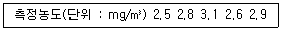
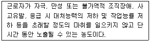
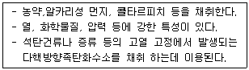
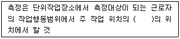
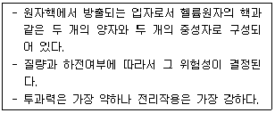

1과목: 산업위생학개론
1. 산업피로를 예방하기 위한 작업자세로서 부적당한 것은?
2. 수공구를 이용한 작업의 개선 원리로 가장 적합하지 않은 것은?
3. 작업이 어렵거나 기계.설비에 결함이 있거나 주의력의 집중이 혼란된 경우 및 심신에 근심이 있는 경우에 재해를 일으키는 자는 어느 분류에 속하는가?
4. 하인리히는 사고예방대책의 기본원리 5단계를 맞게 나타낸 것은?
5. 산업안전보건법에 근로자의 건강보호를 위해 사업주가 실시하는 프로그램이 아닌 것은?
6. 공기 중에 분산되어있는 유해물질의 인체 내 침입경로 중 유해물질이 가장 많이 유입되는 경로는 무엇인가?
7. 미국산업위생학술원(AAIH)에서 채택한 산업위생전문가의 윤리강령 중 근로자에 대한 책임과 가장 거리가 먼 것은?
8. 분진발생 공정에서 측정한 호흡성 분진의 농도가 다음과 같을 때 기하평균농도는 약 몇 ㎎/m3 인가?

9. 사업주가 근골격계부담작업에 근로자를 종사하도록 하는 경우 3년마다 실시하여야 하는 조사는?
10. 작업관련질환은 다양한 원인에 의해 발생할 수 있는 질병으로 개인적인 소인에 직업적요인이 부가되어 발생하는 질병을 말한다. 다음 중 직업관련질환에 해당하는 것은?
11. 정도관리(quality control)에 대한 설명 중 틀린 것은?
12. 육체적 작업능력(PWC)이 15kcal/min인 어느 근로자가 1일 8시간 동안 물체를 운반 하고 있다. 작업대사량(Etask)이 6.5kcal/min, 휴식시의 대사량(Erest)이 1.5kcal/min일 때, 매 시간당 휴식시간과 작업시간의 배분으로 맞는 것은? (단, Hertig의 공식을 이용한다.)
13. 최대 작업력을 설명한 것으로 맞는 것은?
14. 심한 전신피로 상태로 판단되는 경우는?
15. 외국의 산업위생역사에 대한 설명 중 인물과 업적이 잘못 연결된 것은?
16. 작업시작 및 종료 시 호흡의 산소소비량에 대한 설명으로 틀린 것은?
17. 직업병을 판단할 때 참고하는 자료로 적합하지 않은 것은?
18. 허용농도 설정의 이론적 배경으로 '인체실험자료'가 있다. 이러한 인체실험 시 반드시 고려해야 할 사항으로 틀린 것은?
19. 다음은 미국 ACGIH에서 제안하는 TLV-STEL을 설명한 것이다. 여기에서 단기간은 몇분인가?

20. 직업병이 발생된 원진레이온에서 사용한 원인 물질은?
2과목: 작업위생측정 및 평가
21. 기기 내의 알콜이 위의 눈금에서 아래 눈금까지 하강하는데 소요되는 시간을 측정하여 기류를 직접적으로 측정하는 기기는?
22. 분자량이 245인 물질이 표준상태(25℃, 760mmHg)에서 체적농도로 1.0ppm일 때, 이 물질의 질량농도는 약 몇 ㎎/m3인가?
23. 어떤 음의 발생원의 음력(sound power)이 0.006W일 때, 음력수준(sound power level)은 약 몇 dB인가?
24. 다음 내용이 설명하는 막여과지는?

25. 가스크로마토그래피의 검출기에 관한 서명으로 옳지 않은 것은? (단, 고용노동부 고시를 기준으로 한다.)
26. 다음 고열측정에 관한 내용 중 ( )안에 알맞은 것은? (단, 고용노동부 고시를 기준으로 한다.)

27. 음파 중 둘 또는 그 이상의 음파의 구조적 간섭에 의해 시간적으로 일정하게 음압의 최고와 최저가 반복되는 패턴의 파는?
28. 처음 측정한 측정치는 유량, 측정시간, 회수율, 분석에 의한 오차가 각각 15%, 3%, 10%, 7%이였으나 유량에 의한 오차가 개선되어 10%로 감소되었다면 개선 전 측정치의 누적오차와 개선후의 측정치의 누적오차의 차이는 약 몇%인가?
29. 다음 중 수동식 시료채취기(passive sampler)의 포집원리와 가장 관계가 없는 것은?
30. 1일 12시간 작업할 때 톨루엔(TLV-100ppm)의 보정노출기준은 약 몇 ppm인가? (단, 고용노동부 고시를 기준으로 한다.)
31. 다음 중 2차 표준 보정기구와 가장 거리가 먼 것은?
32. 공장 내부에 소음(1대당 PWL=85dB)을 발생시키는 기계가 있을 때, 기계 2대가 동시에 가동된다면 발생하는 PWL의 합은 약 몇 dB인가?
33. 다음 중 직경이 5㎝인 흑구 온도계의 온도 측정시간 기준은 무엇인가? (단, 고용노동부 고시를 기준으로 한다.)
34. 다음 중 빛의 산란 원리를 이용한 직독실 먼지 측정기는?
35. 유기용제 취급 사업장의 메탄올 농도 측정결과가 100, 89, 94, 99, 120ppm일 때, 이 사업장의 메탄올 농도의 기하평균은 약 몇 ppm인가?
36. 흡착제를 이용하여 시료를 채취할 때 영향을 주는 인자에 관한 설명으로 옳지 않은 것은?
37. 다음 중 1일 8시간 및 1주일 40시간 동안의 평균농도를 말하는 것은?
38. 흡수용액을 이용하여 시료를 포집할 때 흡수효율을 높이는 방법과 거리가 먼 것은?
39. 다음 중 비극성 유기용제 포집에 가장 적합한 흡착제는?
40. 통계집단의 측정값들에 대한 균일성과 정밀성의 정도를 표현하는 것으로 평균값에 대한 표준편차의 크기를 백분율로 나타낸 것은?
3과목: 작업환경관리대책
41. A분진의 노출기준은 10㎎/m3이며 일반적으로 반면형 마스크의 할당보호계수(APF)는 10일 때, 반면형 마스크를 착용할 수 있는 작업장 내 A분진의 최대 농도는 얼마인가?
42. 다음 작업환경관리의 원칙 중 대체에 관한 내용으로 가장 거리가 먼 것은?
43. 후드의 유입계수가 0.86일 때, 압력 손실계수는 약 얼마인가?
44. 다음 중 비극성용제에 대한 효과적인 보호 장구의 재질로 가장 옳은 것은?
45. 송풍기의 동작점에 관한 설명으로 가장 알맞은 것은?
46. 다음 중 입자상 물질을 처리하기 위한 공기 정화장치와 가장 거리가 먼 것은?
47. 덕트 설치의 주요사항으로 옳은 것은?
48. 자유공간에 설치한 폭과 높이의 비가 0.5인 사각형 후드의 필요 환기량(Q, m3/s)을 구하는 식으로 옳은 것은? (단, L: 폭(m), W:높이(m), V:제어속도(m/s), X:유해물질과 후드개구부 간의 거리(m), K:안전계수)
49. 배기 덕트로 흐르는 오염공기의 속도압이 6mmH2O일 때, 덕트 내 오염공기의 유속은 약 몇 m/s 인가? (단, 오염공기밀도는 1.25㎏/m3이고, 중력가속도는 9.8m/s2이다.)
50. 송풍기의 송풍량이 200m3/min이고, 송풍기 전압이 150mmH2O이다. 송풍기의 효율이 0.8이라면 소요동력은 약 몇 KW인가?
51. 총압력손실 계산법 중 정압조절평형법에 대한 설명과 가장 거리가 먼 것은?
52. 덕트 직경이 30㎝이고 공기유속이 5m/s일 때, 레이놀드수는 약 얼마인가? (단, 공기의 점성계수는 20℃에서 1.85×10ˉ5㎏/s·m, 공기밀도는 20℃에서 1.2㎏/m3이다.)
53. 다음 중 차음보호구인 귀마개(Ear Plug)에 대한 설명과 가장 거리가 먼 것은?
54. 오염물질의 농도가 200ppm까지 도달하였다가 오염물질 발생이 중지되었을 때, 공기중 농도가 200ppm에서 19ppm으로 감소하는데 거리는 시간은? (단, 1차 반응으로 가정하고 공간부피, V=3000m3, 환기량 Q=1.17m3/s이다.)
55. 국소배기 시설에서 장치 배치 순서로 가장 적절한 것은?
56. 폭 a, 길이 b인 사각형관과 유체학적으로 등가인 원형관(직경 D)의 관계식으로 옳은 것은?
57. 국소배기 시스템의 유입계수(Ce)에 관한 설명으로 옳지 않은 것은?
58. 국소배기 시설의 투자비용과 운전비를 적게하기 위한 조건으로 옳은 것은?
59. 다음 중 자연환기에 대한 설명과 가장 거리가 먼 것은?
60. 다음 중 방진 마스크의 요구사항과 가장 거리가 먼 것은?
4과목: 물리적유해인자관리
61. 음향출력이 1000W인 음원이 반자유공간(반구면파)에 있을 때 20m 떨어진 지점에서의 음의 세기는 약 얼마인가?(오류 신고가 접수된 문제입니다. 반드시 정답과 해설을 확인하시기 바랍니다.)
62. 밀폐공간에서는 산소결핍이 발생할 수 있다. 산소결핍의 원인 중 소모(consumption)에 해당 하지 않는 것은?
63. 고압환경에 의한 영향으로 거리가 먼 것은?
64. 산업안전보건법상 상시 작업을 실시하는 장소에 대한 작업면의 조도 기준으로 맞는 것은?
65. 전신진동이 인체에 미치는 영향이 가장 큰 진동의 주파수 범위는?
66. 고온의 노출기준을 나타낼 경우 중등작업의 계속작업 시 노출기준은 몇 ℃(WBGT)인가?
67. 비전리 방사선에 대한 서령으로 틀린 것은?
68. 다음 설명에 해당하는 전리방사선의 종류는?

69. 방사선단위 “rem"에 대한 설명과 가장 거리가 먼 것은?
70. 1000Hz에서 40dB의 음향레벨을 갖는 순음의 크기를 1로 하는 소음의 단위는?
71. 이상기압에 의해서 발생하는 직업병에 영향을 주는 유해인자가 아닌 것은?
72. 귀마개의 차음평가수(NRR)가 27일 경우 그 보호구의 차음 효과는 얼마가 되겠는가? (단, OSHA의 계산방법을 따른다.)
73. 해수면의 산소분압은 약 얼마인가? (단, 표준상태 기준이며, 공기중 산소함유량은 21vol%이다.)
74. 진동 발생원에 대한 대책으로 가장 적극적인 방법은?
75. 비이온화 방사선의 파장별 건강영향으로 틀린 것은?
76. WBGT(Wet Bulb Globe Temperature index)의 고려 대상으로 볼 수 없는 것은?
77. 음압실효치가 0.2N/m2일 때 음압수준(SPL : Sound Pressure Level)은 얼마인가? (단, 기준음압은 2×10ˉ5N/m2으로 계산한다.)
78. 저온환경에서 나타나는 일차적인 생리적 반응이 아닌 것은?
79. 소음성 난청에 대한 설명으로 틀린 것은?
80. 빛의 단위 중 광도(luminance)의 단위에 해당하지 않은 것은?(오류 신고가 접수된 문제입니다. 반드시 정답과 해설을 확인하시기 바랍니다.)
5과목: 산업독성학
81. 최근 사회적 이슈가 되었던 유해인자와 그 직업병의 연결이 잘못된 것은?
82. 노출에 대한 생물학적 모니터링의 단점이 아닌 것은?
83. 수은중독 증상으로만 나열된 것은?
84. 급성독성과 관련이 있는 용어는?
85. 포르피린과 헴(heme)의 합성에 관여하는 효소를 억제하며, 소화기계 및 조혈계에 영향을 주는 물질은?
86. 다음 중 금속열을 일으키는 물질과 가장 거리가 먼 것은?
87. 유해물질의 노출기준에 있어서 주의해야 할 사항이 아닌 것은?
88. 크실렌의 생물학적 노출지표로 이용되는 대사산물은? (단, 소변에 의한 측정기준이다.)
89. 납중독을 확인하는데 이용하는 시험으로 적절하지 않은 것은?
90. 망간에 관한 설명으로 틀린 것은?
91. 체내에서 유해물질을 분해하는데 가장 중요한 역할을 하는 것은?
92. 접촉에 의한 알레르기성 피부감작을 증명하기 위한 시험으로 가장 적절한 것은?
93. 일산화탄소 중독과 관련이 없는 것은?
94. 금속의 일반적인 독성기전으로 틀린 것은?
95. 유해물질의 생리적 작용에 의한 분류에서 질식제를 단순 질식제와 화학적 질식제로 구분 할 때, 화학적 질식제에 해당하는 것은?
96. 유기용제의 중추신경 활성억제의 순위를 큰것에서부터 작은 순으로 나타낸 것 중 맞는 것은?
97. 사람에 대한 안전용량(SHD)을 산출하는데 필요하지 않은 항목은?
98. 피부독성평가에서 고려해야 할 사항과 가장 거리가 먼 것은?
99. 규폐증을 일으키는 원인 물질로 가장 관계가 깊은 것은?
100. 석면 및 내화성 세라믹 섬유의 노출기준 표시단위로 맞는 것은?